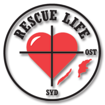

Med denna korta beskrivning som bakgrund hoppas vi nu att vi har kunnat väcka ett intresse hos er att börja utbilda er personal och medverka i en viktig kunskapsuppbyggnad och öka förutsättningarna för att rädda liv.

Kontakt
Om ni har frågor eller behöver ytterligare information, så tveka inte att kontakta oss.